<nav class="navbar navbar-expand-lg navbar-dark bg-dark">
  <a class="navbar-brand logo-wrapper" href="#">
    
    <div class="logo-name">wrocdodomu.pl</div>
  </a>

  <button class="navbar-toggler" type="button" (click)="toggleNavbar()">
    <span class="navbar-toggler-icon"></span>
  </button>


  <div class="collapse navbar-collapse" [ngClass]="{ 'show': navbarOpen }">
    <ul class="navbar-nav ml-auto mr-5">
      <li class="nav-item mr-3">
        <a class="nav-link" [routerLinkActive]="['active']" routerLink="lost">ZAGINIONE</a>
      </li>

      <li class="nav-item">
        <a class="nav-link" [routerLinkActive]="['active']" href="#">ZNALEZIONE</a>
      </li>
    </ul>
  </div>
</nav>
